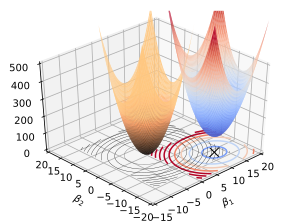
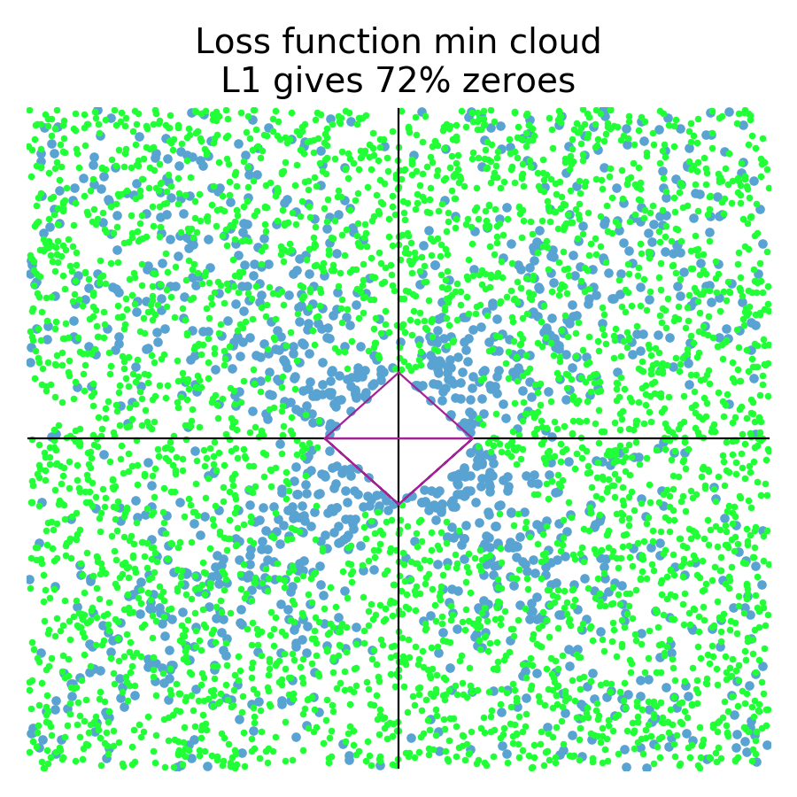
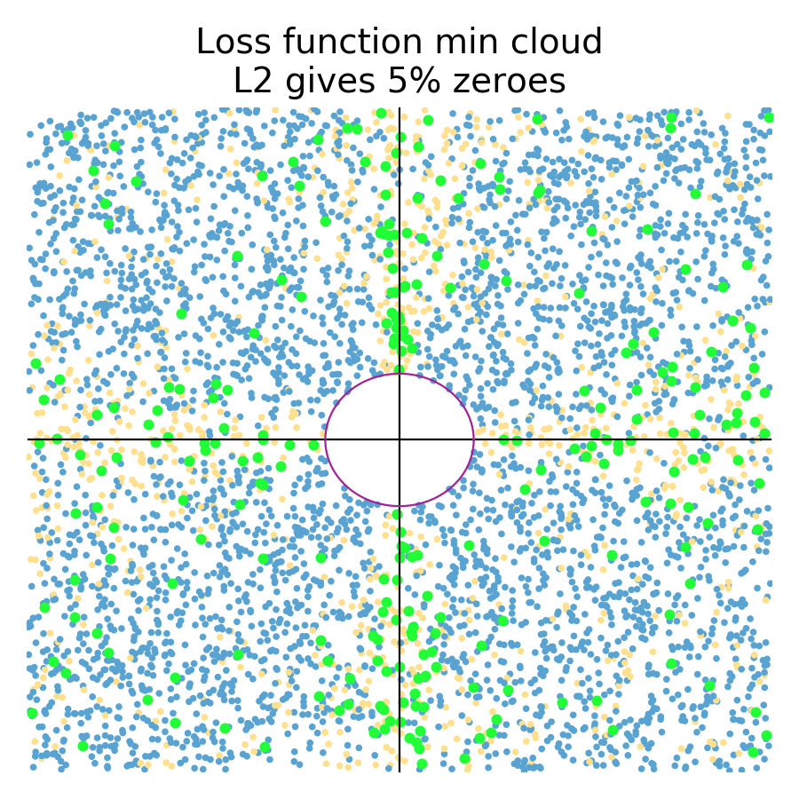
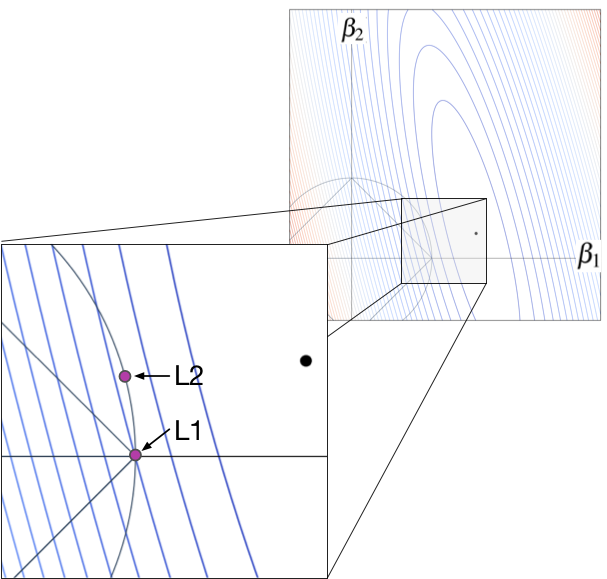

Personally, my biggest initial stumbling block was this: The math used to implement regularization does not correspond to pictures commonly used to explain regularization. Take a look at the oft-copied picture (shown below left) from page 71 of ESL in the section on “Shrinkage Methods.” Students see this multiple times in their careers but have trouble mapping that to the relatively straightforward mathematics used to regularize linear model training. The simple reason is that that illustration shows how we regularize models conceptually, with hard constraints, not how we actually implement regularization, with soft constraints! The math actually corresponds to the picture on the right, with the loss function in blue-red (blue = lower, red = higher loss) and the regularization penalty term in orange, emanating from the (0,0).
|  | |
| Hard constraint illustration from ESL page 71. | Soft constraint with non-regularized loss function (blue-red) term and penalty term (orange). |
 Regularization conceptually uses a hard constraint to prevent coefficients from getting too large (the cyan circles from the ESL picture). For implementation purposes, however, we convert that “subject to” hard constraint to a soft constraint by adding the constraint as a term to the loss function. The hard constraint in the regularized loss function,
Regularization conceptually uses a hard constraint to prevent coefficients from getting too large (the cyan circles from the ESL picture). For implementation purposes, however, we convert that “subject to” hard constraint to a soft constraint by adding the constraint as a term to the loss function. The hard constraint in the regularized loss function,
 ,
becomes a term in the equation and with a new constant that controls regularization:
,
becomes a term in the equation and with a new constant that controls regularization:
 . The penalty term is a soft constraint because there is no threshold or clipping; larger coefficients are simply more expensive. The effect is to shift the ordinary loss function “bowl” upwards and the loss function minimum towards the origin, as shown to the right; that bowl is the addition of the loss and penalty bowls. The only thing changing in that picture is lambda; the training data remains the same. The moving bowl is the nonregulated loss function plus the penalty L2 term.
. The penalty term is a soft constraint because there is no threshold or clipping; larger coefficients are simply more expensive. The effect is to shift the ordinary loss function “bowl” upwards and the loss function minimum towards the origin, as shown to the right; that bowl is the addition of the loss and penalty bowls. The only thing changing in that picture is lambda; the training data remains the same. The moving bowl is the nonregulated loss function plus the penalty L2 term.
|  |  |
The L1 diamond hard constraint on the left tends to zero coefficients for any loss function whose minimum is in the zone perpendicular to the diamond edges. The L2 circular constraint tends to zero coefficients for loss function minimums sitting really close to or on one of the axes.
If L1 encourages zero coefficients, why does it do that?! Why doesn't L2 encourages zero coefficients? Imagine we have some training data where the variable associated with  is very predictive but the other variable is not. In that case, we would see a loss function with contour lines kind of like the following where the big black dot is the non-regularized loss function minimum.
is very predictive but the other variable is not. In that case, we would see a loss function with contour lines kind of like the following where the big black dot is the non-regularized loss function minimum.
For the L1 case, the optimal  location is the purple dot at the diamond tip. This is true because any movement of away from that spot increases the loss. Take a look at the contour line emanating from the L1 purple dot. The associated ellipse has the same loss value at all locations. Any position outside of that ellipse, away from the black dot, has higher loss; any inside that ellipse have lower loss. Any movement in either direction along the diamond edge, away from the purple dot, increases the loss because immediately moves outside of the contour associated with the L1 purple dot. Moving the black dotup into the left, however, would start to make nonzero L1 coefficients more likely.
location is the purple dot at the diamond tip. This is true because any movement of away from that spot increases the loss. Take a look at the contour line emanating from the L1 purple dot. The associated ellipse has the same loss value at all locations. Any position outside of that ellipse, away from the black dot, has higher loss; any inside that ellipse have lower loss. Any movement in either direction along the diamond edge, away from the purple dot, increases the loss because immediately moves outside of the contour associated with the L1 purple dot. Moving the black dotup into the left, however, would start to make nonzero L1 coefficients more likely.
For the L2 case, the optimal location is at the other purple dot location, and not on the axis like the L1 case. Because the L2 purple dot is inside the contour line that means the L1 dot on the axis, it has lower loss value than either of the orange dots. Moving the purple dot along the circular constraint line in any direction would increase the loss. The optimal L2 coefficients are nonzero, despite the fact that the non-regularized loss function minimum (black dot) is very close to the axis.